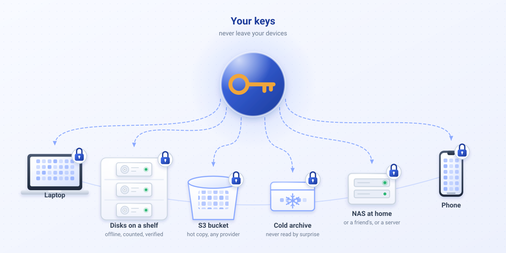

Your files. Your storage.
Varsto is an end-to-end encrypted sync and backup app that uses your own devices and storage services of your choice. A disk, a NAS share or (soon) an S3 bucket; the app encrypts everything on your devices, keeps a signed record of where every block is, and lets devices that are never online at the same time stay in sync through that storage.

What works today (alpha-0: command line and a local desktop interface)
Encrypted before it leaves your device
Files are cut into content-defined chunks, each encrypted with XChaCha20-Poly1305 under keys derived from your vault. Storage sees opaque objects and sizes, never names, hashes or content.
Bring your own storage
Any directory this device can reach: a local disk, a removable disk in a dock, a network mount. Cold storages are written but never read without your confirmation.
Devices that never meet still converge
Each device keeps a signed, encrypted ledger and publishes it through the storage. Edits, deletions and conflicts resolve deterministically; concurrent edits keep both versions, deletions go to a trash.
Desktop interface on every platform
varsto desktop (or double-clicking Varsto.app) opens a local page in your browser, served only to this computer and protected with a session token. Create or join a vault, add storages and folders, sync, run fsck.
Bookkeeping you can check
varsto fsck --verify compares the ledger with what the storage actually holds and re-hashes every object. A device restored from an old backup is detected and fenced.
What is designed but not built yet
Post-quantum hybrid
Hybrid X25519 + ML-KEM key agreement and Ed25519 + ML-DSA signatures. Alpha-0 signs with Ed25519 only; every object carries an algorithm identifier so the change needs no rewrite of your data.
Security keys and Strongroom
FIDO2 hmac-secret wrapping of the vault and folders that open only with a touch of your security key. Research on platform support is published.
S3, rclone, peer-to-peer, mobile
S3-compatible and rclone remotes, LAN peer-to-peer transfer, durability policies with alerts, placeholders, Android and iOS, and an MCP server for AI assistants.
Sharing
Sharing folders with other people needs the key exchange that the key hierarchy draft describes. Not in alpha-0.
Honest status
- Alpha-0 is a first vertical slice: core library, a CLI and a local desktop interface, about 9 000 lines, 18 automated tests including two-device offline convergence, concurrent edits and a restored-device fence. Use it with test data only.
- The cryptographic design has not been reviewed or audited. The threat model and the failure model say what the design intends and where it stops.
- The source repository is private during the alpha; it will be published under the PolyForm Shield License 1.0.0 (source-available, not open source) with the first public alpha. The storage format is documented so that your data stays recoverable.
- The name is provisional and the site is kept out of search engines until it is settled.
Downloads
Release 0.0.1-alpha.1. Checksums: SHA256SUMS.
| File | Platform | Size | Notes | SHA-256 |
|---|---|---|---|---|
| varsto-0.0.1-alpha.1-aarch64-apple-darwin.tar.gz | macOS (Apple Silicon) | 1083 KiB | command line + desktop UI; cross-compiled, unsigned | 674a141d096d156f2ea1c4875db9b5cbe2f22a97aa29b67bec3e706568004510 |
| varsto-0.0.1-alpha.1-source.tar.gz | Source | 195 KiB | git archive of v0.0.1-alpha.1 | 3a1d56263ef27dfcc9e15a23b9045177de977aab5d1ff7693de0d6e6734a9b7f |
| varsto-0.0.1-alpha.1-x86_64-apple-darwin.tar.gz | macOS (Intel) | 1181 KiB | command line + desktop UI; cross-compiled, unsigned | 46ac831cff2d0ffa611cc498cd1dfa3f63d32df7bddd37844dcce6db2d144771 |
| varsto-0.0.1-alpha.1-x86_64-pc-windows-gnu.zip | Windows x86_64 | 1705 KiB | command line + desktop UI; cross-compiled, not tested on Windows | 59f03e31a2bbbdffe82e876286dda6b598fb5e5e61821cb40557f1afa80023df |
| varsto-0.0.1-alpha.1-x86_64-unknown-linux-musl.tar.gz | Linux x86_64 | 1167 KiB | command line + desktop UI; static binary (musl) | 5f1c4df72b6c096ea242d38702afe7b3d4dd7b883cd04a6e1d8bb539665dcbd9 |
| Varsto-0.0.1-alpha.1-macos.zip | macOS app | 2262 KiB | double-click to open the desktop UI; universal (Apple Silicon + Intel); unsigned, not yet tested on a Mac | cffe8d3597d7ec02c7a63a162e07c8d8d9a5c809a5d1ccff618053b2b4eac729 |
Verify a download: sha256sum -c SHA256SUMS --ignore-missing. A checksum on the same page proves little against an attacker who controls the site; signed releases and a second channel are planned.
Latest from the blog
- Alpha-0: the first vertical slice
A command-line tool that encrypts, stores and syncs a folder between two devices through storage you own, with a signed ledger you can check.